Railway Systems
This is Lesson 1 of E322, Rail Operational Management.
The course is based on the Railway Systems Handbook, edited by Pang Hock Lye and Cheong Mun Kit and published by the Institution of Engineers, Singapore (IES), with support from the Land Transport Authority (LTA), SMRT and SBS Transit.
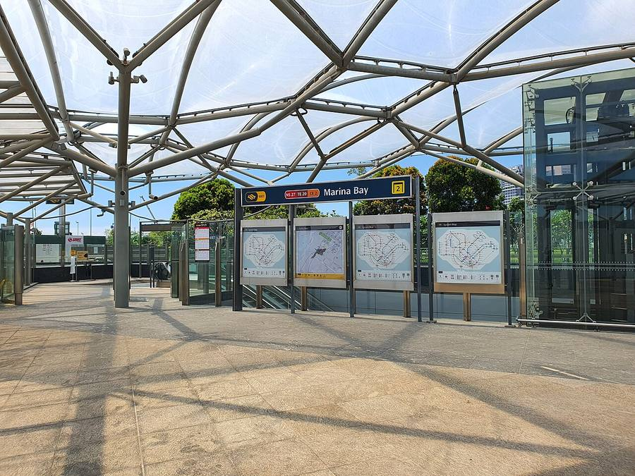
Welcome to Railway Systems
This is a cross-disciplinary introduction for polytechnic engineering students.
What this course is
The course introduces the engineering systems behind Singapore's Mass Rapid Transit (MRT) network, the same system many of you ride to school. You will see how track, trains, power, signalling, communications, station services, assurance and asset management work together as one connected system.
Who it is for
The course is aimed at Year 1 and 2 polytechnic students in Electrical and Electronic, Mechatronics, Mechanical and Civil Engineering. Basic physics and electrical knowledge is assumed. You do not need any rail-industry experience, because every acronym is defined the first time it appears.
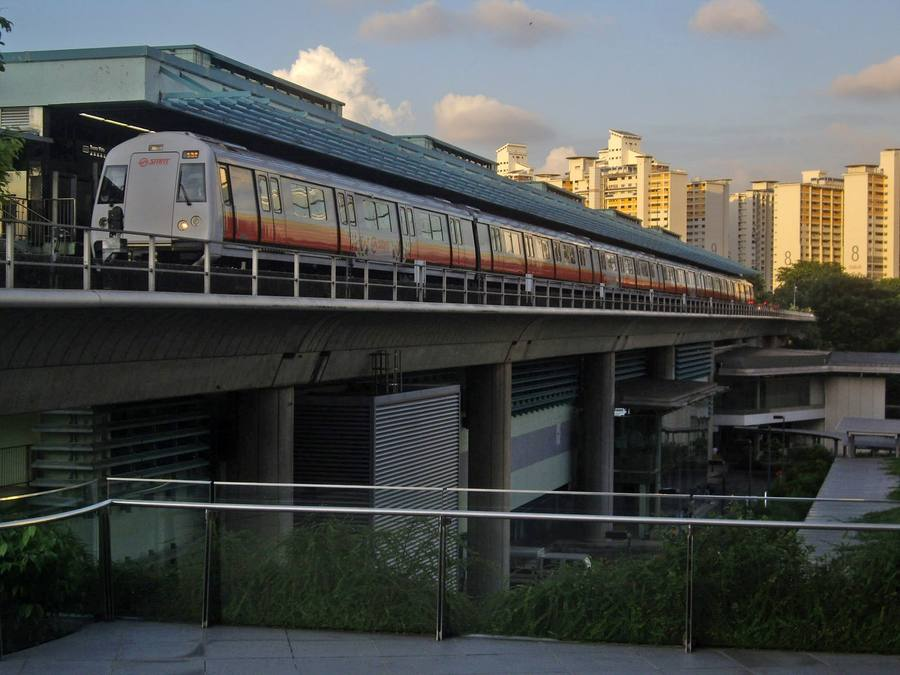
Why railway engineering matters
Rail is the backbone of Singapore's public transport, and metros are among the largest moving services in the world. Three numbers show the scale:
- 229 km: the size of the Singapore rail network in 2018, up from 182 km in 2013. That is about a 50% increase in capacity.
- About 360 km: the target network by around 2030, which means almost one new MRT line or extension every year.
- 168 million: daily metro trips worldwide in 2017, across metros in 178 cities.
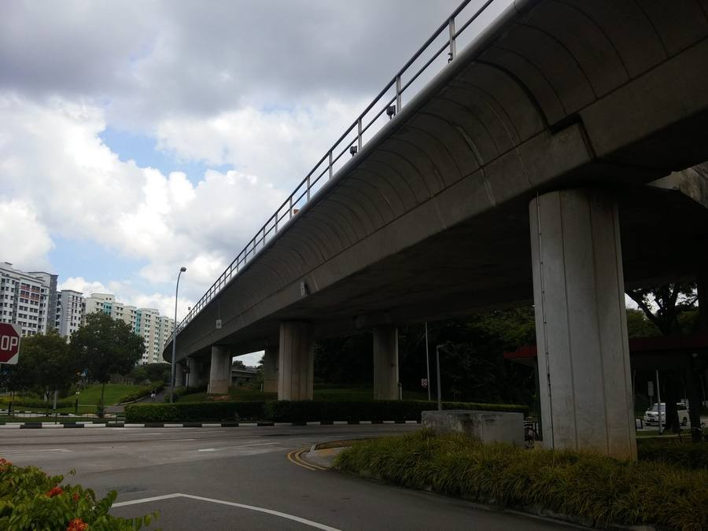
Source: IES Railway Systems Handbook, Foreword and LTA Message.
LTMP 2040: a 20-minute town and a 45-minute city
The Land Transport Master Plan 2040 was launched by the Land Transport Authority (LTA) on 25 May 2019. It sets three headline commitments for 2040:
- A 20-minute town: door-to-door travel to the nearest neighbourhood centre in 20 minutes, by walking, cycling or riding public transport.
- A 45-minute city: door-to-door travel to the city centre in 45 minutes during peak periods, by the same modes.
- 9 in 10 peak-period journeys made by walking, cycling or public transport by 2040.
An excellent rail system is the key strategy for reaching these targets.
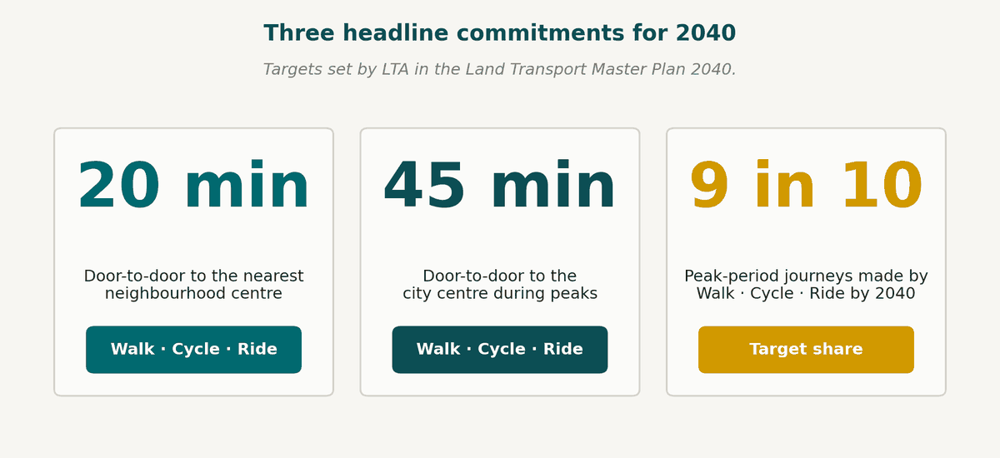
Singapore's MRT lines
The network you will study throughout this course has six heavy-rail lines run by two operators.
| Code | Line | Operator |
|---|---|---|
| NSL | North-South Line | SMRT |
| EWL | East-West Line | SMRT |
| CCL | Circle Line | SMRT |
| NEL | North East Line | SBS Transit |
| DTL | Downtown Line | SBS Transit |
| TEL | Thomson-East Coast Line | SMRT |
The MRT lines are joined by LRT feeder lines in Bukit Panjang, Sengkang and Punggol. The Cross Island Line (CRL) will open in phases from about 2030, taking the network towards roughly 360 km.
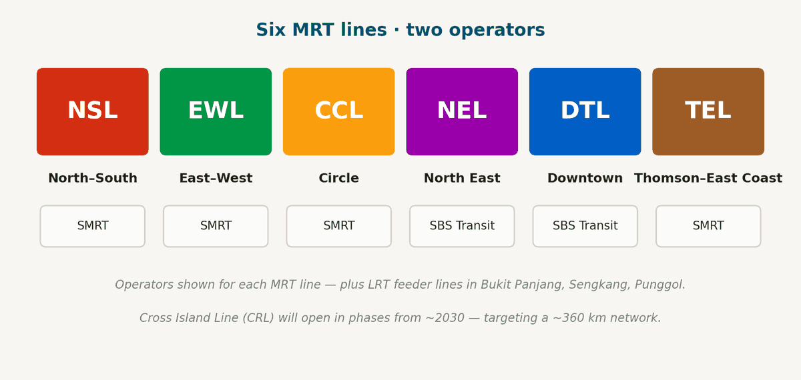
The railway as a system of systems
An MRT service depends on eight engineering domains working as one integrated whole. They follow the structure of the handbook: each domain is one handbook chapter and one module of this course.
- Permanent Way: rails, sleepers and ballast.
- Rolling Stock: trains, bogies and traction.
- Power Supply: the high-voltage grid and traction supply.
- Signalling and PSD: communications-based train control (CBTC), interlocking and platform screen doors.
- Communications and Control: the operations control centre (OCC), radio and networks.
- M&E Services: HVAC, fire protection, lifts and lighting.
- Systems Assurance: RAMS and integration.
- Asset Management: life cycle, MKBF and renewals.
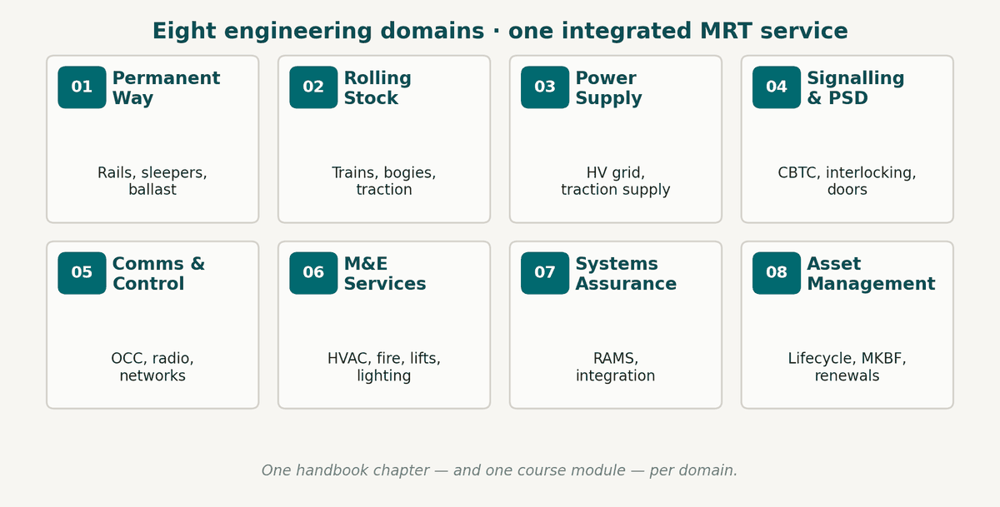
Chapter 1: Permanent Way, the track system
What it covers
The permanent way is the track itself: rails, sleepers (concrete or wooden), ballast and slab track. It also includes the fastenings that hold the rails, the turnouts that let trains change tracks, and the trackside third rail used in Singapore.
Why it matters
Track geometry and condition shape ride quality, safety and reliability across the whole MRT.
Chapter 2: Rolling Stock, the trains themselves
- Car body and bogies: the structural shell and the running gear that carry passengers along the track.
- Traction and braking: traction motors, converters, and combined service and emergency brakes.
- Auxiliaries and communications: on-board 3-phase 400 V AC supply, HVAC (heating, ventilation and air conditioning), doors, and the links between train and control centre.
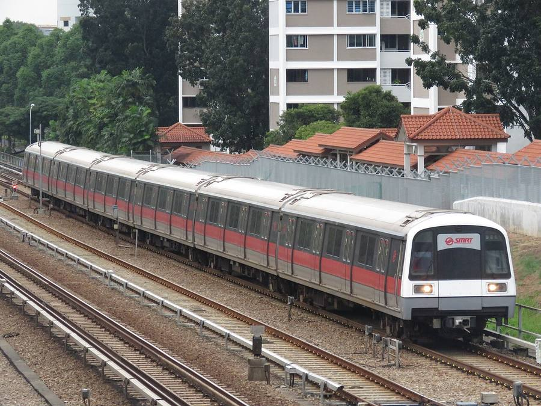
Chapter 3: Power Supply Systems, high-voltage distribution and traction
From grid to train
Power flows from the national grid to bulk substations, then to traction substations, then to the third rail (or overhead line), and finally into the train.
Station auxiliaries
Stations draw power from a separate low-voltage distribution system, which supplies lighting, services and small power.
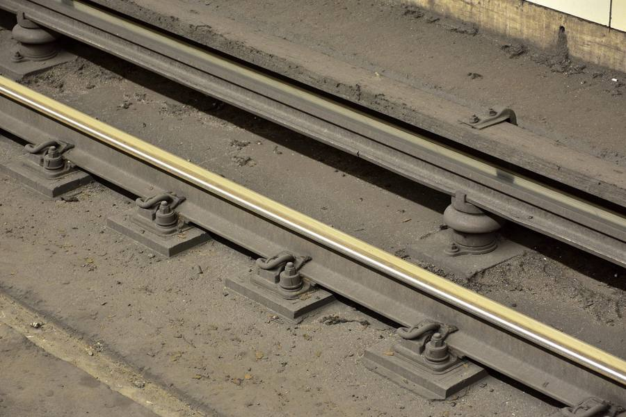
Chapter 4: Signalling and Platform Screen Doors, safe train control
Signalling
Signalling covers train detection, interlocking and route setting. Communications-based train control (CBTC) is used on the North-South, East-West and Circle lines. It is built in layers: automatic train protection (ATP), automatic train operation (ATO) and automatic train supervision (ATS).
Platform screen doors
Platform screen doors (PSDs) separate the platform from the track and work in step with the train doors. They improve safety, the station climate and dwell time, which is how long a train waits at a platform.
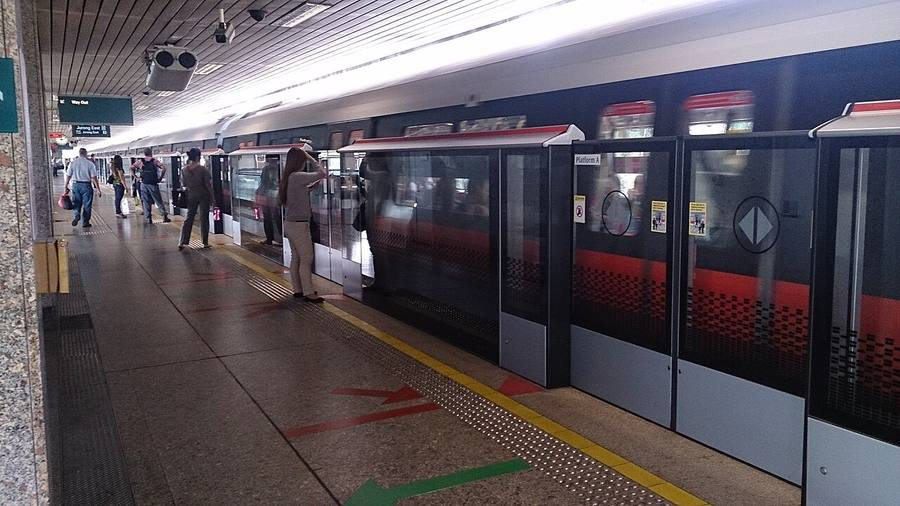
Chapter 5: Communications and Control Systems, the nerve centre and networks
Operations Control Centre
The Operations Control Centre (OCC) is the central nerve centre. It supervises train movements, power and stations.
Radio, CCTV and networks
This chapter also covers train radio, station telephony and surveillance, together with the backbone networks that connect every subsystem.
Chapter 6: Mechanical and Electrical Services, stations and tunnels
Climate and life safety
These systems include tunnel ventilation, station air-conditioning, fire protection and other life-safety systems.
Passenger equipment
They also include escalators, lifts, lighting, drainage and small power across stations and depots.
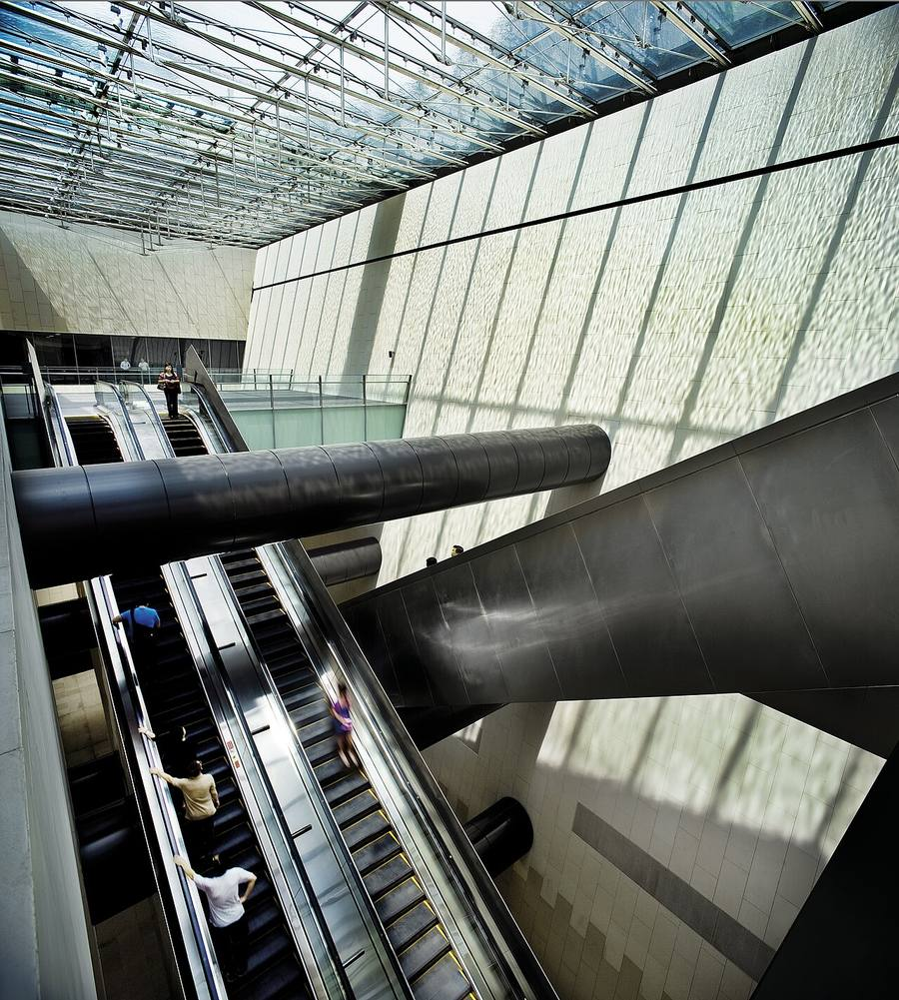
Chapter 7: Systems Assurance, RAMS in practice
Systems assurance applies systems engineering to Reliability, Availability, Maintainability and Safety (RAMS). It manages risk across complex, multi-disciplinary systems and provides the evidence base for safe operation.
Each letter of RAMS asks a question and has a measure:
- Reliability: will it work when we need it? Measured by Mean Kilometres Between Failure (MKBF).
- Availability: how often is it ready for service? Measured as uptime, as a percentage of scheduled service hours.
- Maintainability: how fast can it be restored? Measured by Mean Time To Repair (MTTR).
- Safety: how well does it protect people? Measured by whether hazards are eliminated or controlled to ALARP (as low as reasonably practicable).
RAMS targets flow from design, through commissioning, to in-service operation.
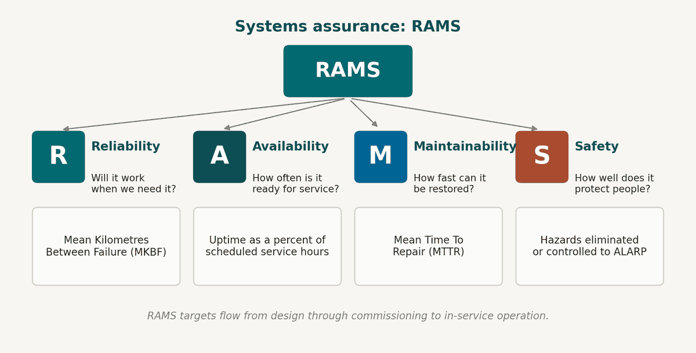
Chapter 8: Asset Management, across the whole life cycle
Asset register and maintenance
Good asset management starts with knowing every asset: what it is, where it is and what condition it is in. Preventive, predictive and corrective work is then applied to keep assets in service.
Renewals and performance
Ageing assets are planned for replacement, and asset health is linked to key performance indicators such as MKBF and availability.
The life cycle
Assets move through five stages: plan (identify needs and set requirements), acquire (design, build and commission), operate (run the daily service), maintain (preventive and predictive work) and renew (replace ageing assets). Renewal feeds back into planning, so it is a continuous cycle.
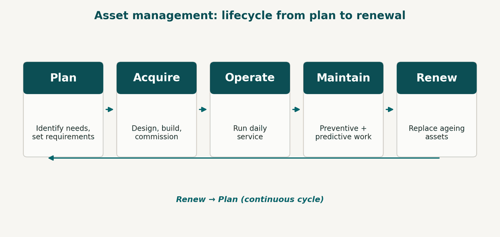
Roles and career pathways
Rail engineering needs many disciplines, and every Singapore MRT line is delivered by engineers working across all of them together. The Skills Framework for Public Transport (May 2018) maps the career routes. Five disciplines stand behind the MRT:
- Civil and structural: tracks, tunnels, viaducts and stations.
- Mechanical: rolling stock, HVAC, doors and lifts.
- Electrical: high-voltage power, traction and station auxiliary supply.
- Signalling and control: CBTC, ATP/ATO/ATS, PSDs and interlocking.
- Systems and assurance: RAMS, integration, life cycle and safety.
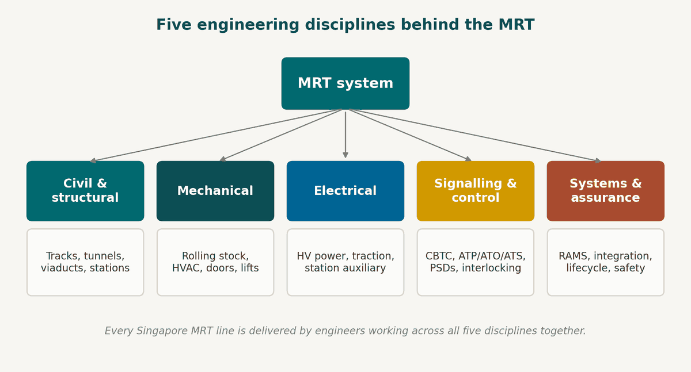
Reliability: the MKBF story
Mean Kilometres Between Failure (MKBF) tells you how far, on average, the network runs before a service delay. Singapore's figure has changed a great deal:
- Before 2018: below 200,000 km, after three consecutive years of frequent disruptions.
- 2018: 690,000 km. Renewals, CBTC upgrades and maintenance reforms paid off.
- Target: 1,000,000 km, as Singapore aims for the best metros in the world.
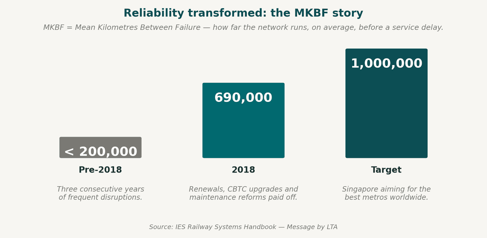
How this course works
Every module follows the same rhythm, so the course is predictable, built up step by step and easy to revise. There are five parts:
- Modules: one module for each handbook chapter.
- Slide decks: about 18 to 22 slides each.
- Handouts: a 3-page PDF for each chapter.
- Quick-checks: short questions to confirm you have grasped the chapter.
- Assessment: an end-of-course assessment covering all eight chapters.
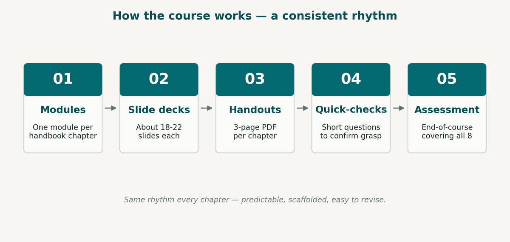
How to read the handbook
The same structure repeats in every chapter, so you can use it to find things quickly.
Inside each chapter
- Introduction: what the system does and why it matters.
- System overview: the main sub-systems and how they fit together.
- Standards: the design and engineering standards followed.
- Components: a detailed description of each major part.
- Operation and maintenance considerations.
At the end of the book
- References: the standards, papers and books cited.
- Appendices: standards relevant to each subsystem.
- Figures and tables: labelled diagrams to study alongside the text.
- Glossary of acronyms: handy when an unfamiliar term appears.
Course roadmap
The course runs for 26 teaching weeks, from this introduction through all eight chapters to the final assessment. That is about 3 weeks per chapter, with 2 weeks for assessment and review.
The order is: Module 0 (Intro), then Chapter 1 Permanent Way, Chapter 2 Rolling Stock, Chapter 3 Power Supply, Chapter 4 Signalling and PSD, Chapter 5 Comms and Control, Chapter 6 M&E Services, Chapter 7 Systems Assurance, Chapter 8 Asset Management, and finally the assessment.
Each chapter is one slide deck (18 to 22 slides), one three-page handout and a set of quick-check questions.
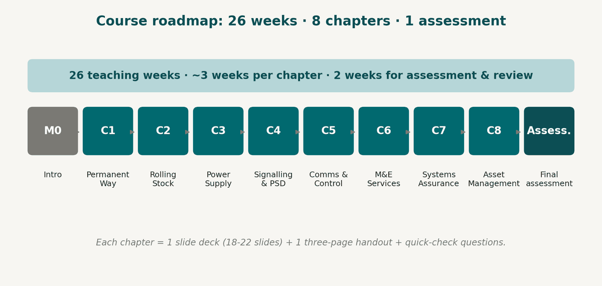
Welcome aboard
That is the end of Module 0. Do you have any questions before we move into Chapter 1: Permanent Way?
Based on the Railway Systems Handbook, Institution of Engineers, Singapore (IES), edited by Pang Hock Lye and Cheong Mun Kit. Supported by LTA, SMRT and SBS Transit.
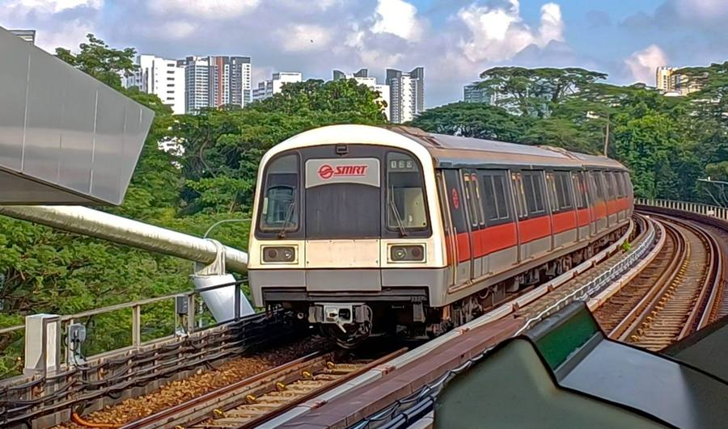
Modern Metro in Motion
This part of the course uses a short illustrative clip of a metro train arriving at a station. It sets the scene for what you will study over the next 26 weeks.
The clip is AI-generated and illustrative only. It is not technical reference footage. The video is not included on this site yet.
Rail Networks in a Modern City
This part of the course uses an aerial clip of an urban rail corridor weaving through a tropical metropolitan skyline.
The clip is AI-generated and illustrative only. It is not technical reference footage. The video is not included on this site yet.